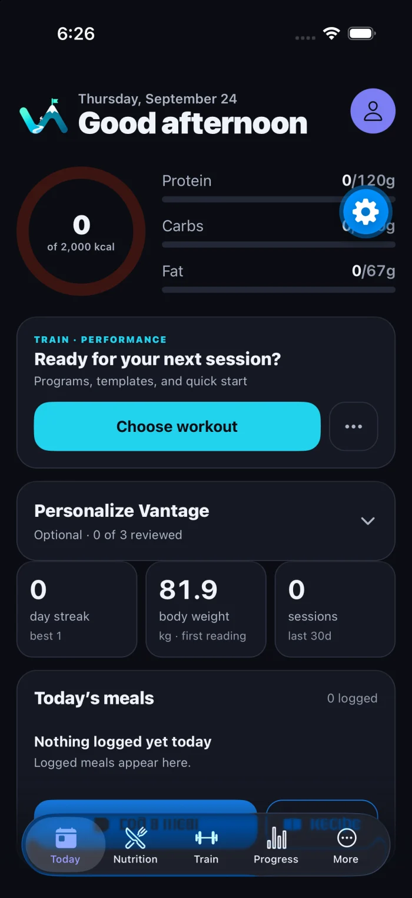
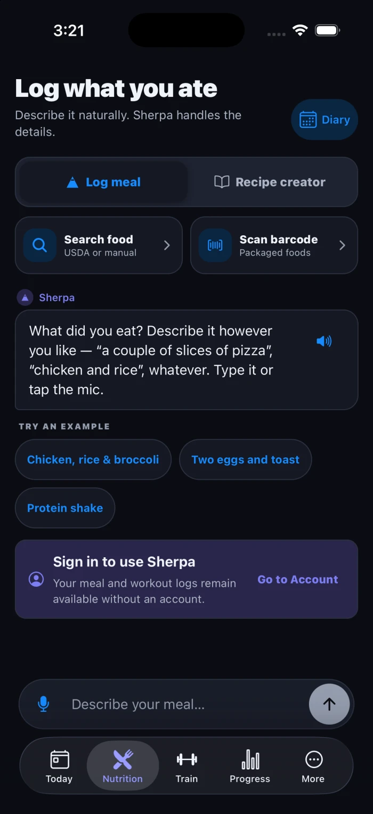
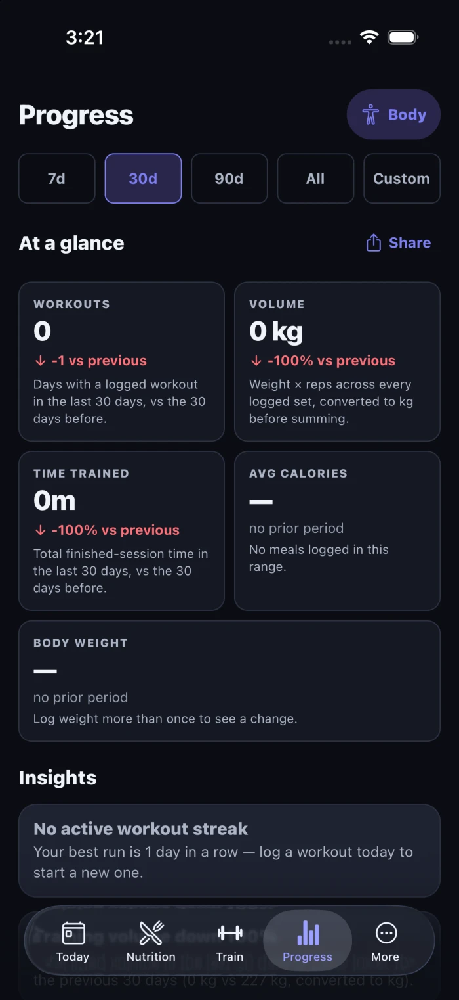
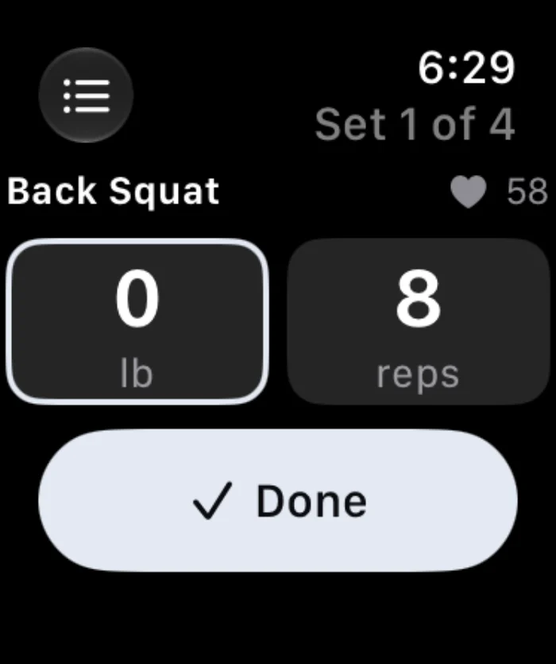

Today
Calories left and macro progress for Home Screen and Lock Screen.
Private beta · iPhone, iPad & Apple Watch
Vantage is a practical daily log for workouts, meals, and body progress. It works offline where it matters and gives you context without turning your health into a feed.

The current app
The main actions stay obvious: describe a meal, scan a barcode, resume a session, check a trend, or move on with your day.



Apple Watch
Start a workout, enter weight and reps, follow rest, record timed or distance work, see today’s diary, log a saved meal, or dictate one from your wrist.

Widgets
The data bridge and Lock Screen privacy control are in the app now. The visual widget extension and Live Activity are the next build step, so they are not shown here as finished product.
Calories left and macro progress for Home Screen and Lock Screen.
Voice, barcode, search, and one-tap saved meals.
Your scheduled session with a direct start action.
Current exercise, rest countdown, +30 seconds, skip rest, and log set.
Private beta
Vantage is still being tested. Beta feedback goes directly to the person building it.